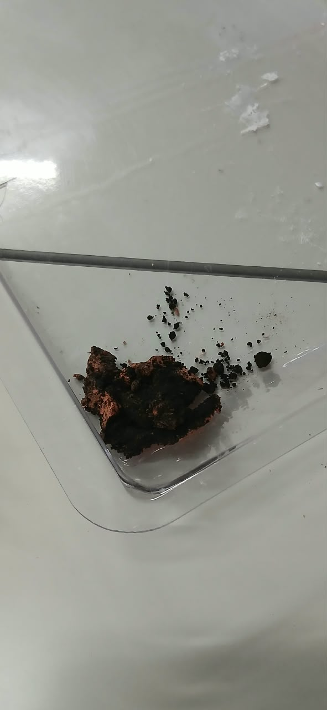
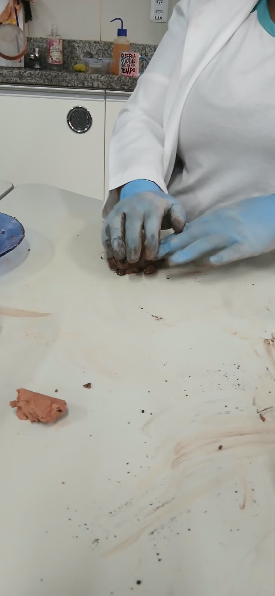

Germinação
Registrar a data do surgimento das primeiras plântulas e a quantidade de sementes germinadas.
A acompanharConheça as etapas de desenvolvimento do projeto, os procedimentos experimentais e os registros produzidos durante a investigação sobre sementes, plantas e conhecimentos etnobotânicos.
Conhecer o experimentoRegistro das atividades e dos procedimentos realizados.
Esta página reúne os registros relacionados ao desenvolvimento do Semeia+, um guia etnobotânico que busca valorizar as relações entre as pessoas, as plantas e os conhecimentos tradicionais.
A documentação também apresenta o experimento de preparação de bombas de sementes, permitindo registrar os materiais utilizados, as formulações elaboradas e as observações realizadas ao longo das etapas de desenvolvimento.
Preparação e comparação das bombas de sementes.
Investigar diferentes composições de bombas de sementes, variando as proporções de argila e adubo e as formas de posicionamento das sementes. O experimento busca permitir a observação das características físicas das bombas e, posteriormente, acompanhar a germinação e o desenvolvimento das plantas.
Os materiais foram combinados em diferentes proporções para formar as bombas de sementes. Em algumas formulações, as sementes foram incorporadas à mistura; em outra, foram posicionadas na parte externa. Também foram preparadas bombas com uma camada externa de argila e sementes acompanhadas de adubo no interior.
Comparação dos materiais utilizados em cada preparação.
| Formulação | Argila | Adubo | Preparação das sementes |
|---|---|---|---|
| A | 60% | 40% | Adubo e sementes no interior da massa. Foram utilizados 25 mL de água no preparo. |
| B | 60% | 40% | Sementes incorporadas no interior da mistura. |
| C | 50% | 50% | Sementes posicionadas em diferentes pontos da superfície externa. |
| D | 0% | 100% | Sementes incorporadas diretamente ao adubo. |
Observação: os percentuais representam a composição informada de argila e adubo. Os 25 mL de água da formulação A foram registrados separadamente.
Distribuição percentual de argila e adubo.
O gráfico apresenta a composição informada das formulações, não resultados de germinação.
Documentação visual das etapas experimentais.

Registro das amostras antes do fechamento das bombas de sementes.

As amostras mais escuras apresentam composição de 50% de argila e 50% de adubo. As amostras rosadas contêm argila externamente e adubo com sementes de aroeira no interior.
Indicadores para as próximas etapas.
Registrar a data do surgimento das primeiras plântulas e a quantidade de sementes germinadas.
A acompanharMedir a altura das plantas e acompanhar seu desenvolvimento ao longo do tempo.
A acompanharObservar se as bombas mantêm sua forma ou se desmancham após o contato com a água.
A acompanharAs bombas ainda estão em fase de preparação e registro. Os resultados serão adicionados após a realização dos testes de acompanhamento.